Project 3 — Panoramic Image Stitching
CS 280A — Computer Vision & Computational Photography
This project explores the creation of panoramic image mosaics through projective transformations. We capture multiple photographs with overlapping fields of view and stitch them together to create seamless panoramic images using computer vision techniques. Key components include:
- Pixel-center convention. I treat pixel centers as integer coordinates; this simplifies the mapping between image pixels and their corresponding points in the scene.
- Inverse warping. Avoids holes by sampling the source via \(H^{-1}\) for every output pixel.
- Bilinear vs Nearest Neighbor Interpolation. Bilinear is slower but cleaner (less aliasing). I compare both with timings.
- Feathered weights for blending. Images contribute most near their centers and taper at the borders for smooth seams.
A.1 — Shoot the Pictures
I shot 3 different settings to derive photographs with projective transformations between them. This means keeping the center of projection stable while just moving the angle of the shot via camera rotation. To make sure I could compute accurate homographies these images needed about 40-70% overlap. I chose to capture a scenic viewpoint, my bookcase, and my backyard shed.
Bookcase
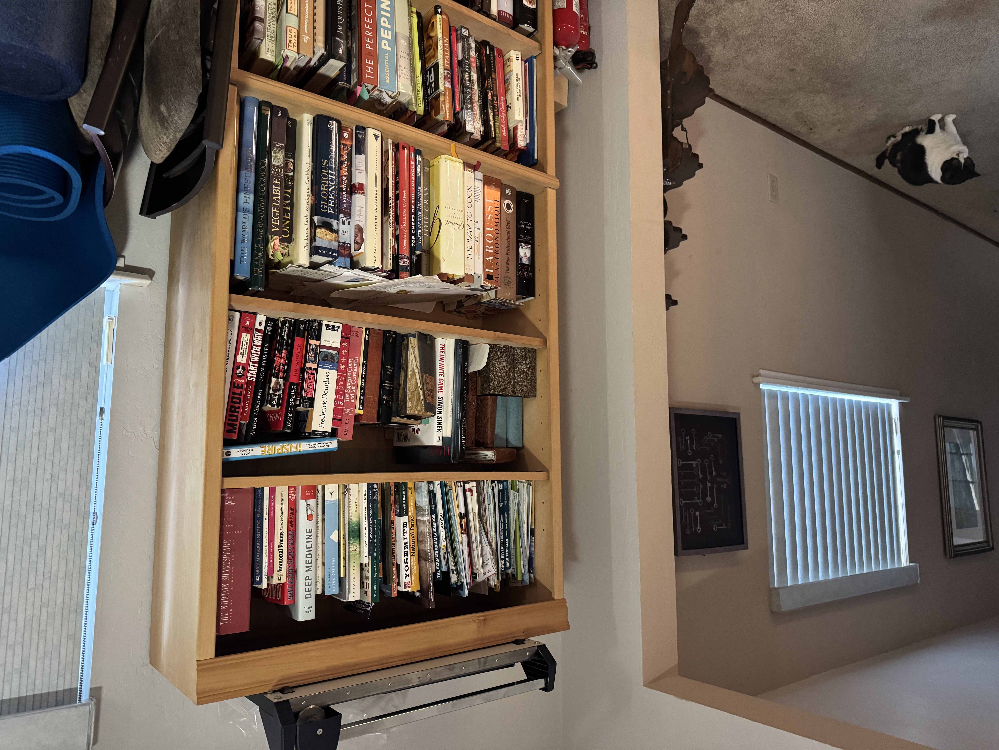
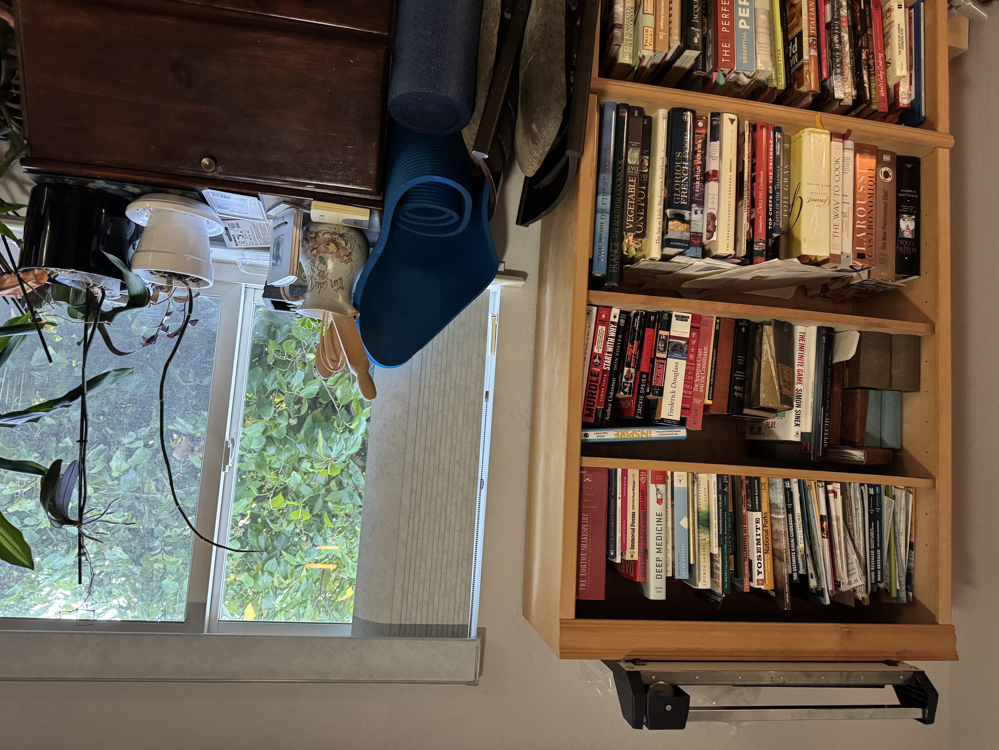
Viewpoint
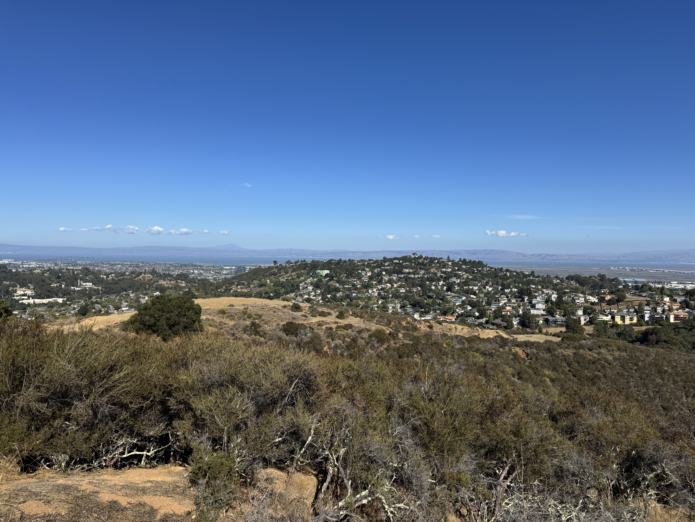
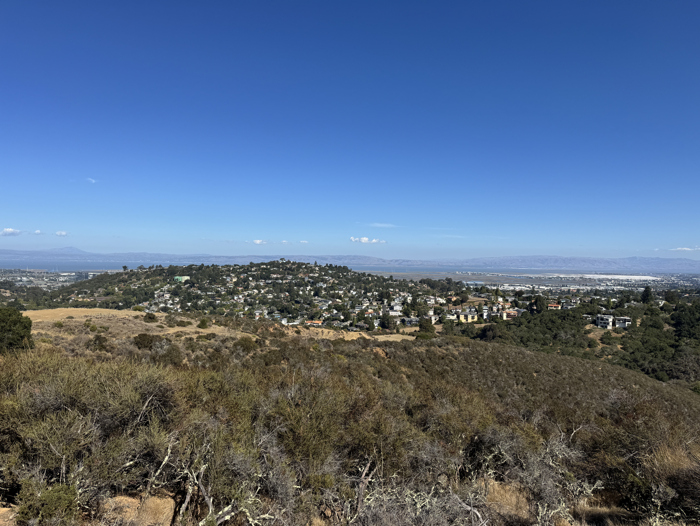
Shed
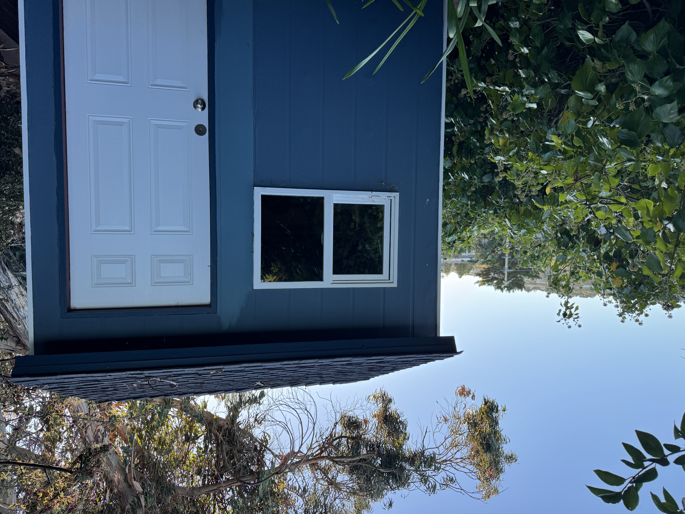
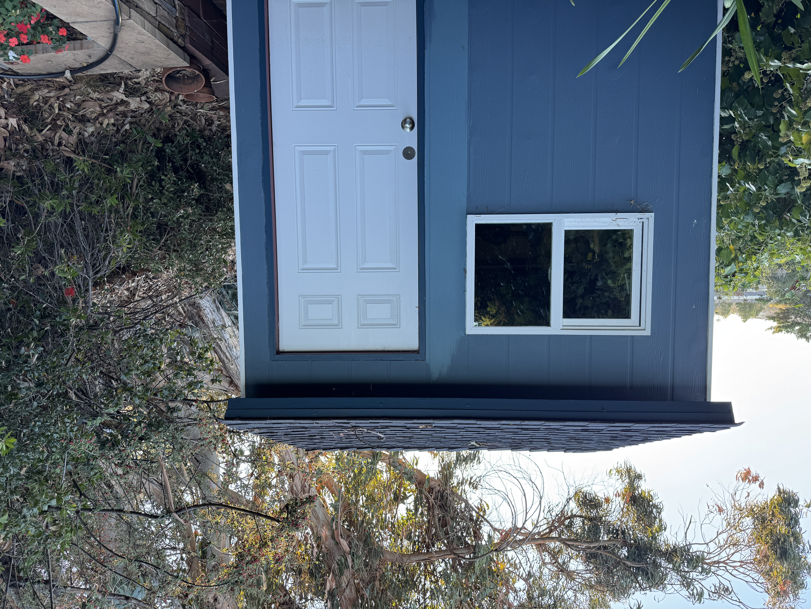
A.2 — Homography Matrix Computation
To derive the homography \(H\), we start from the projective mapping \[ \lambda \begin{pmatrix} u \\ v \\ 1 \end{pmatrix} = H \begin{pmatrix} x \\ y \\ 1 \end{pmatrix}, \quad H = \begin{pmatrix} h_1 & h_2 & h_3 \\ h_4 & h_5 & h_6 \\ h_7 & h_8 & 1 \end{pmatrix}. \] Expanding gives \[ \lambda \begin{pmatrix} u \\ v \\ 1 \end{pmatrix} = \begin{pmatrix} h_1 x + h_2 y + h_3 \\ h_4 x + h_5 y + h_6 \\ h_7 x + h_8 y + 1 \end{pmatrix} \quad \Longrightarrow \quad \begin{pmatrix} u \\ v \end{pmatrix} = \frac{1}{h_7 x + h_8 y + 1} \begin{pmatrix} h_1 x + h_2 y + h_3 \\ h_4 x + h_5 y + h_6 \end{pmatrix}. \] Solving for \(u\) and \(v\) leads to \[ \begin{aligned} u &= \frac{h_1 x + h_2 y + h_3}{h_7 x + h_8 y + 1}, \\ v &= \frac{h_4 x + h_5 y + h_6}{h_7 x + h_8 y + 1}. \end{aligned} \] Multiply both sides by the denominator to linearize: \[ \begin{aligned} (h_7 x + h_8 y + 1)u &= h_1 x + h_2 y + h_3, \\ (h_7 x + h_8 y + 1)v &= h_4 x + h_5 y + h_6. \end{aligned} \] Rearranging: \[ \begin{aligned} h_1 x + h_2 y + h_3 - h_7 x u - h_8 y u &= u, \\ h_4 x + h_5 y + h_6 - h_7 x v - h_8 y v &= v. \end{aligned} \] Each correspondence \((x,y)\leftrightarrow(u,v)\) contributes two equations, giving the linear system \[ \underbrace{\begin{pmatrix} x & y & 1 & 0 & 0 & 0 & -xu & -yu \\ 0 & 0 & 0 & x & y & 1 & -xv & -yv \end{pmatrix}}_{A} \begin{pmatrix} h_1 \\ h_2 \\ h_3 \\ h_4 \\ h_5 \\ h_6 \\ h_7 \\ h_8 \end{pmatrix} = \underbrace{\begin{pmatrix} u \\ v \end{pmatrix}}_{b}. \]
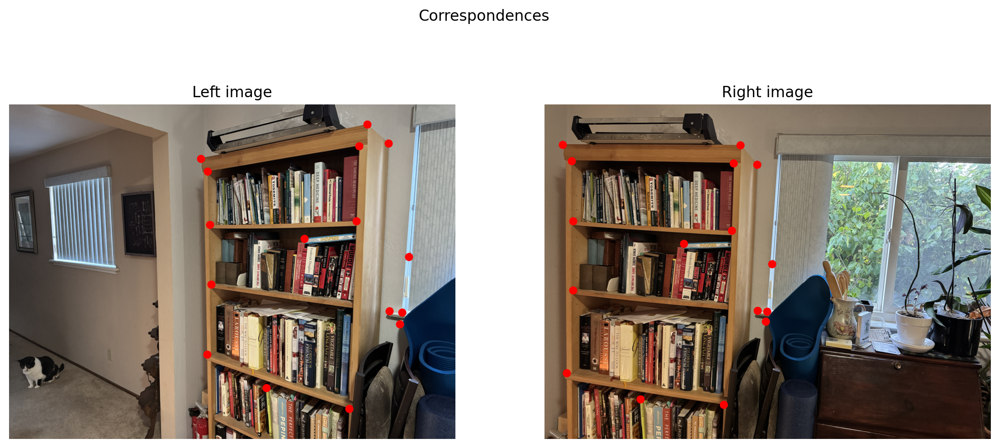
- All matched correspondences are used (not just 4) and the system is solved via least squares.
- \(h_{33}=1\) is fixed and used to normalize the solution.
- The estimated \(H\) along with the system of equations is shown below for reference.
Estimated Homography \(H\)
System of Equations \((A \mid b)\)
A.3 — Warp the Images & Rectification
I implemented inverse warping with two interpolation modes: Nearest Neighbor (round to the closest pixel) and Bilinear (weighted sum of the 4 neighbors). The output canvas size is predicted by warping the 4 source corners through \(H\).
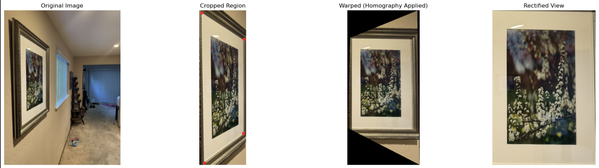
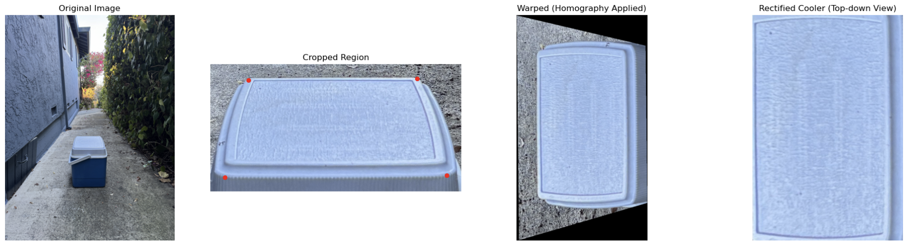
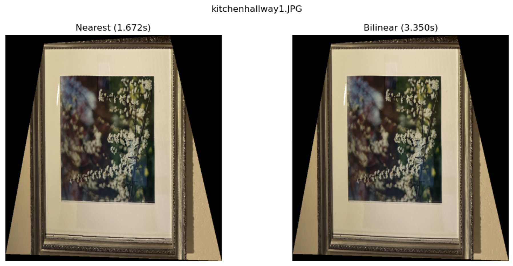
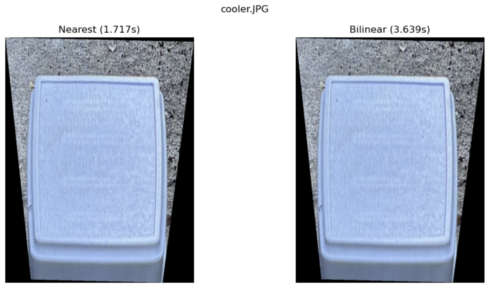
Nearest neighbor interpolation works by mapping a point in the output image to the nearest pixel in the input image and directly copying its value. Because it only involves rounding coordinates and reading a single pixel, it’s extremely fast and lightweight. However, this simplicity can lead to jagged or pixelated artifacts.
Bilinear interpolation, in contrast, considers the values of the four closest pixels surrounding the target coordinate. It calculates a weighted average based on the distance of the point from each of these neighbors. While this method results in noticeably smoother and more natural-looking images, it comes at a computational cost. Each pixel requires multiple memory accesses and additional floating-point operations to compute the interpolation in both the horizontal and vertical directions.
The performance gap between the two arises from this difference in workload. Nearest neighbor does just one read and minimal math, while bilinear needs four reads and several arithmetic steps per pixel — leading to significantly higher computational overhead. This explains why bilinear interpolation tends to be slower, sometimes by 40–50%, depending on the image size.
A.4 — Blend the Images into a Mosaic
I build a mosaic by chaining homographies into the first view’s coordinate frame, predicting a global canvas from all warped corner boxes, and inverse warping each image into that canvas. For blending I use simple feathering: an alpha mask that is high near the center of each warped image and falls to zero at its borders (weighted averaging at every pixel). This removed hard seams, and though I considered implementing a Laplacian pyramid, it was not necessary based on the results.
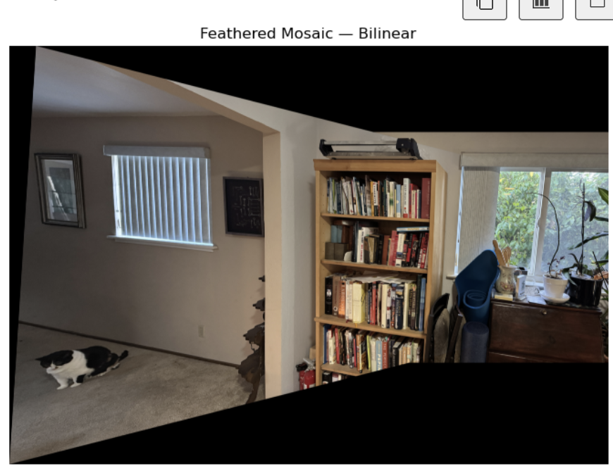
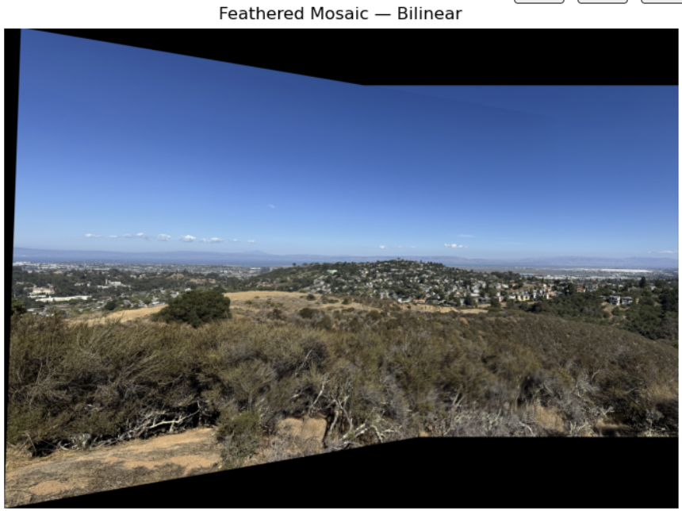
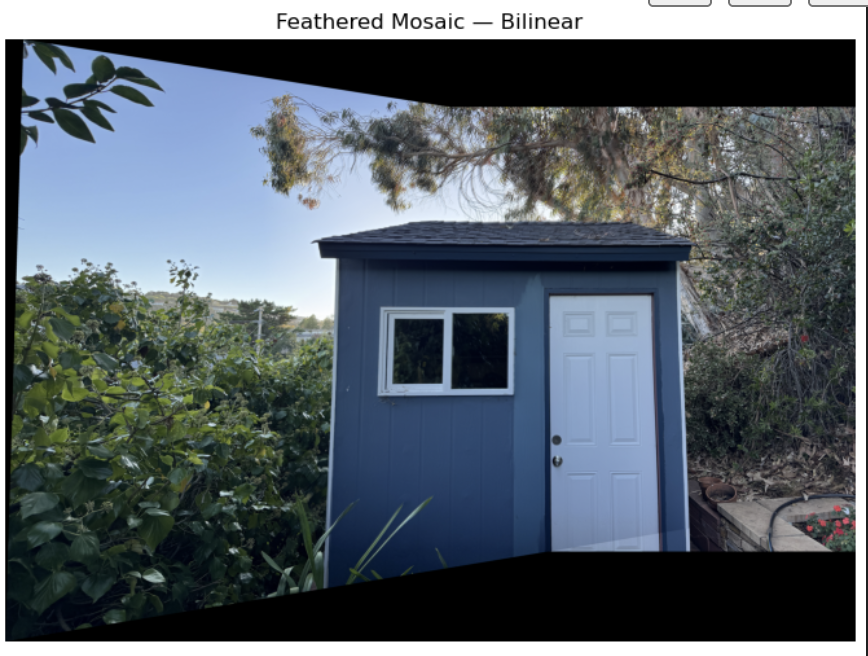
- I warp a ones image through the same homography to get a map of where the image will be, then multiply by a feather mask for the final alpha.
A.5 — Cylindrical Mapping
Wide panoramas could look better if we first map the images onto a cylinder before stitching. This can look much more natural since the image feels fuller than when mapped via planar projection, especially at the edges. I do see more artifacts in the cylindrical mosaic, likely due to some blending with the borders after warping
My Process
- I chose a focal length \(f\) (in pixels). I start with \(f \approx 0.8\text{–}1.0 \times\) and then tweak by eye.
- Inverse warp to the cylinder. For every pixel on the cylindrical canvas \((u,v)\), map back to the original image \((x,y)\) and sample with bilinear interpolation.
- Stitch After pre-warping each image to cylindrical space, I reuse the same homography + feathered blend pipeline from A.4 to build the mosaic.
Formulas
Let the image center be \((c_x,c_y)\). Normalized coordinates: \(x'=\frac{x-c_x}{f},\; y'=\frac{y-c_y}{f}\).
plane → cylinder:
\[
\theta=\arctan(x'), \quad h=\frac{y'}{\sqrt{1+x'^2}}, \quad
u = f\,\theta + c_x,\;\; v = f\,h + c_y.
\]
cylinder → plane:
\[
\theta=\frac{u-c_x}{f},\;\; h=\frac{v-c_y}{f},\;\;
x = f \tan\theta + c_x,\;\;
y = \frac{f\,h}{\cos\theta} + c_y.
\]
I predict the output canvas by forward-warping the source image borders into cylindrical space and taking their min/max. Blending uses the same mask as in A.4.
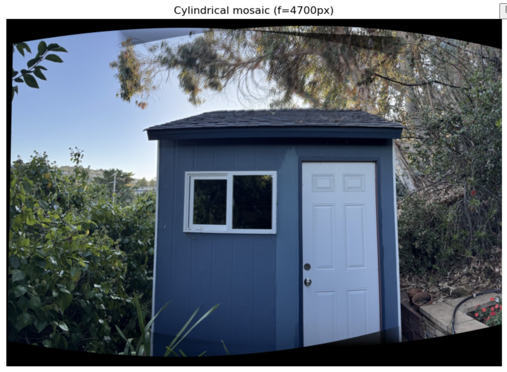
B.1: Harris Corner Detection
To automate feature matching, we first need an algorithm to find distinctive points in both images. A common choice is the Harris corner detector, which locates corners—pixels where intensity changes strongly in more than one direction—making them good anchors for correspondence.
How It Works
My implementation uses scikit-image's corner_harris with the 'eps' method and sigma=1. This functions gives back a response map where higher values indicate corners with stronger directional changes.
At a high level:
- Get the gradients: Calculate Ix and Iy in the x and y directions
- Form matrix M: Compute the matrix from Ix², IxIy, and Iy², pixelwise
- Calculate corner response: Compute corner strength with harmonic mean of eigenvalues (‘eps’)
- Find maxima: Use peak_local_max to find corners (with min_distance = 40) spacing
With this set up, a corner is stronger if both e-values of M are big. A weakness of this method is that it often produces many corners but they are not distributed effectively in the image. Ideally, a better set of corners would be smaller, but well-spaced, while preserving the most distinctive corners. To achieve this, I implemented ANMS (Adaptive Non-Maximal Suppression): a technique that selects a subset of Harris corners whose responses are local maxima within a given area. ANMS assigns each detected corner a suppression radius: the smallest distance to another corner that is noticeably stronger. Large radii indicate isolated, high-quality features; small radii signal points sitting near better ones and thus candidates for removal.
Below I show the corners found with and without ANMS:
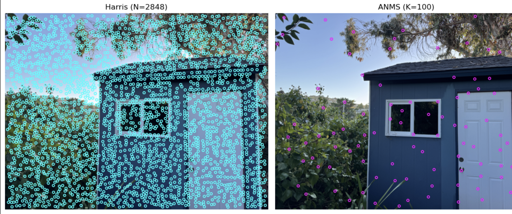
B.2: Feature Descriptor Extraction
Next up I needed to turn each corner into a compact, distinct descriptor that we can use to find the homography accurately between the images. These descriptors need to be robust to any exposure/lighting changes so that they can be accurately matched.
Around every surviving corner, I take a 40 x 40 grayscale window centered on the point. If the full patch would cross the image boundary, that corner is skipped. From this patch, I sample on a regular 5 x 5 pixel grid to form an 8 x 8 patch, then bias/gain-normalize the values by subtracting the mean and dividing by the standard deviation. Nearly flat patches are thrown out to avoid bad descriptors. The 8 x 8 patch is finally flattened into a 64-D vector.
Key details
Window size =40, descriptor grid =8×8 (sample indices 0,5,10,…), and per-descriptor mean/std normalization. The extractor returns three things: the descriptor matrix (M,64), the indices of corners that produced valid patches, and their (y,x) locations.
Below you can see 10 example 8×8 grid feature descriptors of the shed image:
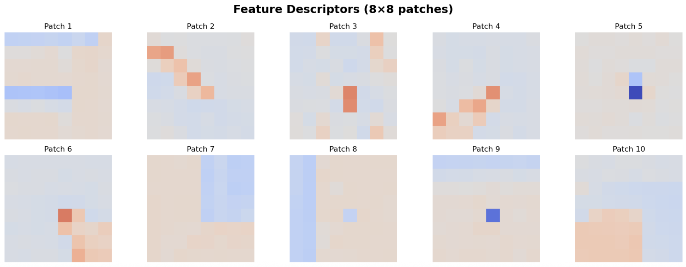
And below shows the locations of these features in the original image:
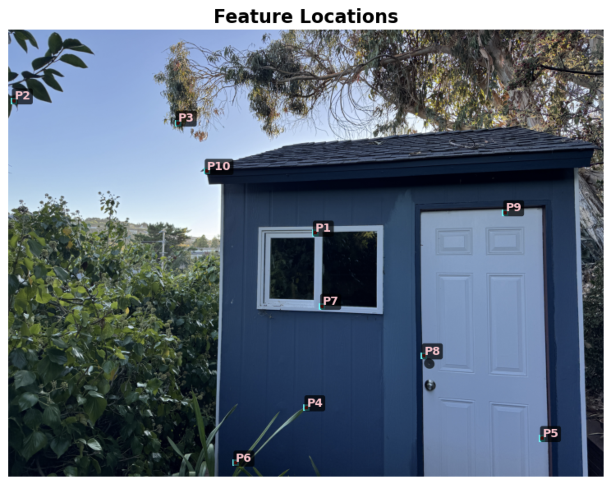
B.3: Feature Matching
Once descriptors are computed for both images, the next step is to decide which pairs refer to the same scene area. I do this with a simple nearest-neighbor strategy guided by Lowe’s ratio test. First, I compare every descriptor from image 1 against every descriptor from image 2 using squared Euclidean distance. This produces a big similarity table where smaller values mean two descriptors look alike.
For each descriptor in image 1, I look at its two best candidates in image 2: the closest neighbor and the runner-up. A match is accepted only when the closest one is clearly better than the second best, i.e., when the distance ratio d1/d2 is below 0.76. This filter removes ambiguous cases such as repetitive textures, where many patches look almost the same. The matcher returns two things: a list of index pairs linking features across the images, and a confidence score for each pair (the ratio value—smaller is better). I sort the pairs by this score so the most trustworthy correspondences appear first. To make the results easy to inspect, I include a side-by-side visualization: the two images are shown on one canvas, corresponding points are drawn in matching colors with short labels, and a colored line connects each pair.
Matching Results
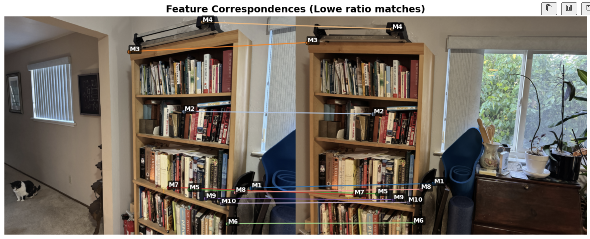
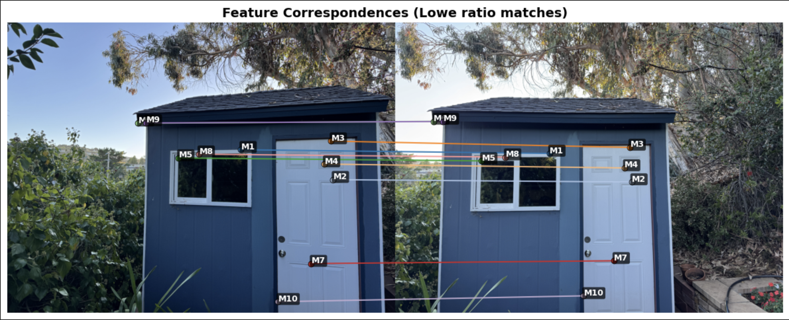
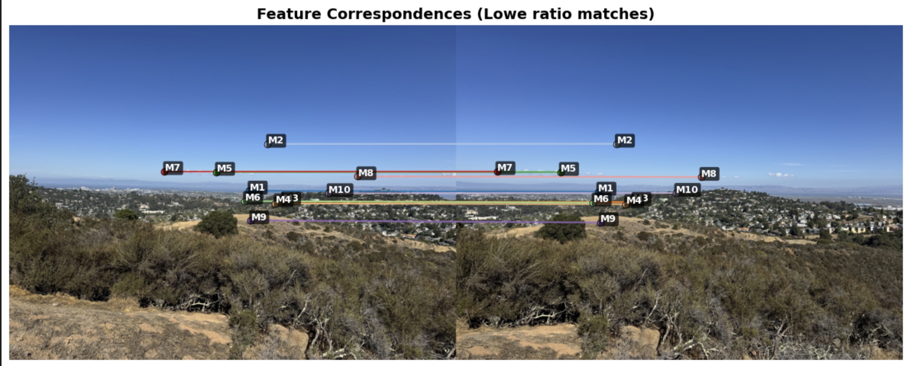
A brief note on tuning: lowering the ratio threshold yields fewer, cleaner matches; raising it yields more matches with a higher chance of outliers. In practice, 0.76 worked well with our normalized 8×8 descriptors and provided enough high-quality correspondences for RANSAC to find a stable homography.
B.4: RANSAC
What problem this solves.
Even after the ratio test, a few bad matches may linger. Fitting a homography to all matches makes the result swing toward those outliers. RANSAC fixes this by gathering a large-enough, consistent subset of correspondences and ignores the rest.
What I implemented.
Starting from the matched points in (x, y), I run a 4-point RANSAC loop. In each trial, four pairs are sampled at random and a candidate homography H is fit. I then project every point from image 1 into image 2 with H and measure the forward reprojection error in pixels. Matches with error below a threshold are counted as inliers. The best-scoring model (most inliers) is kept, and finally I refit H using all inliers to get the final estimate. The function returns this refined H and the inlier mask; those inliers are passed straight into the mosaic stitching.
Below you can see a visualization of the inliers separated from the outliers:
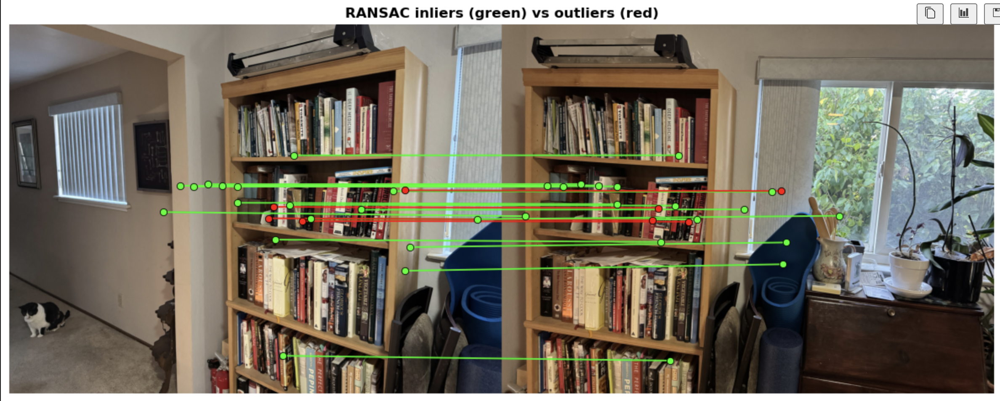
Parameters used.
I typically run 2000 trials with a 12 px inlier threshold and require ~30+ inliers before refitting. For tougher scenes, increasing iterations (e.g., 5000) or loosening the threshold slightly (12–15 px) gives more inliers and a steadier mosaic.
Below are the comparisons of stitching using manual correspondences against automatic stitching:
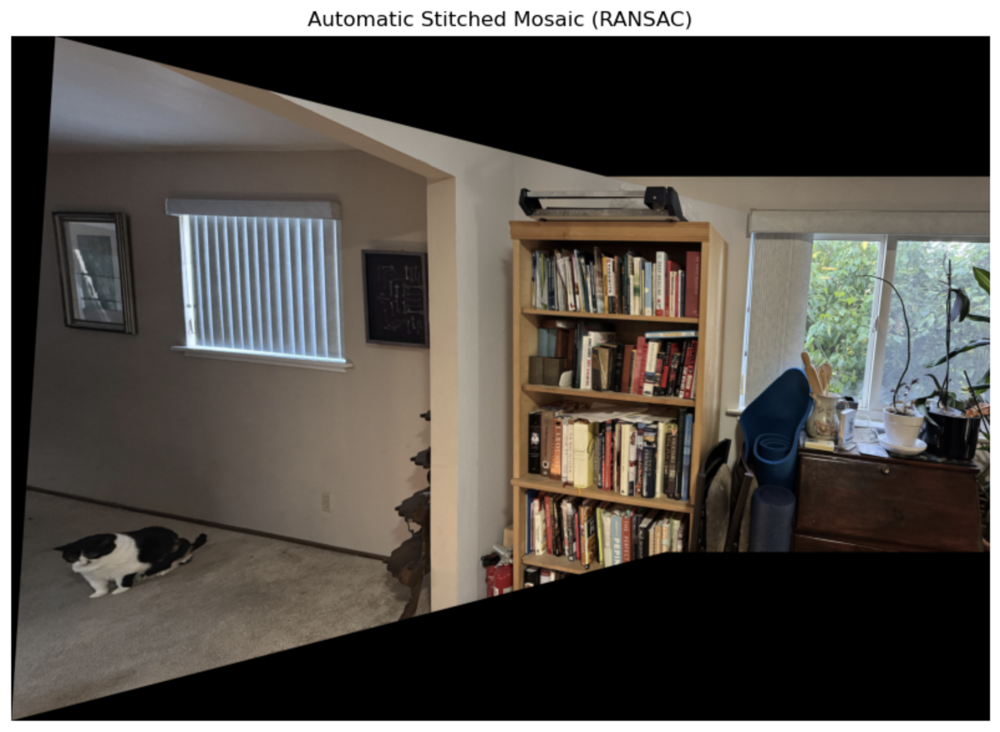
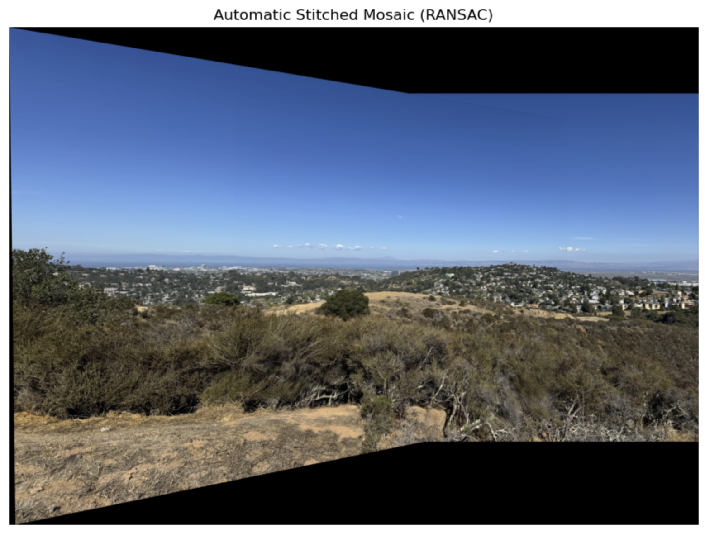
Thoughts:
Using RANSAC makes the homographies far less sensitive to mismatches. In practice, the automatic stitches closely match the manual baselines while requiring no hand-picked points—and small tweaks to the iteration count or pixel threshold can trade a bit of speed for extra inliers when needed.
B.5: Bells + Whistles: Multiscale Processing
Multiscale Processing:
I run corner detection and descriptor extraction at multiple image scales (1.0,0.75,0.5) and merge results back to the original resolution. At each level I extract the harris corners, run ANMS, extract descriptors at each level, and then concatenate everything together. After multiscale extraction on both images, I match with Lowe’s ratio test (with the same threshold as before), convert matches to (x,y), run 4-point RANSAC (iters=5000, thresh_px=12, min_inliers=30), and build the mosaic, which refits using computeH on the RANSAC inliers.
Below are two examples of the results:
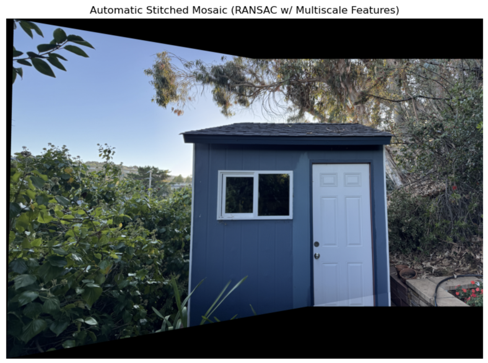
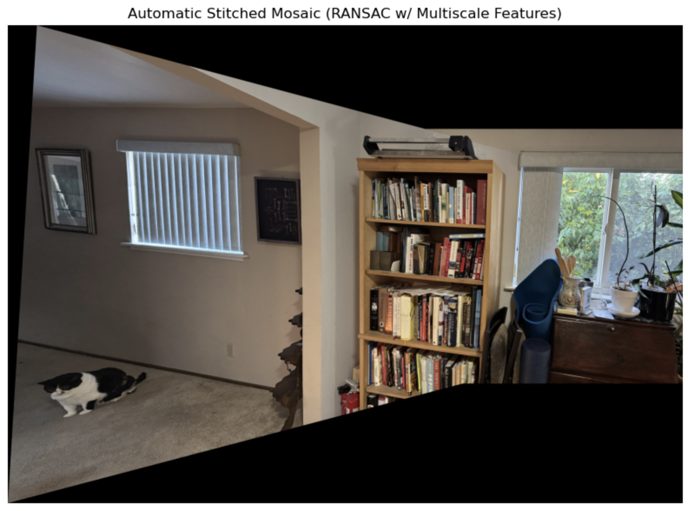
Does it help?
I do think the distinction is somewhat hard to notice but the stitch looks better in the areas at the seam,in the greenery of the shed, and seems overall successful. Woot woot!
Fun project :)